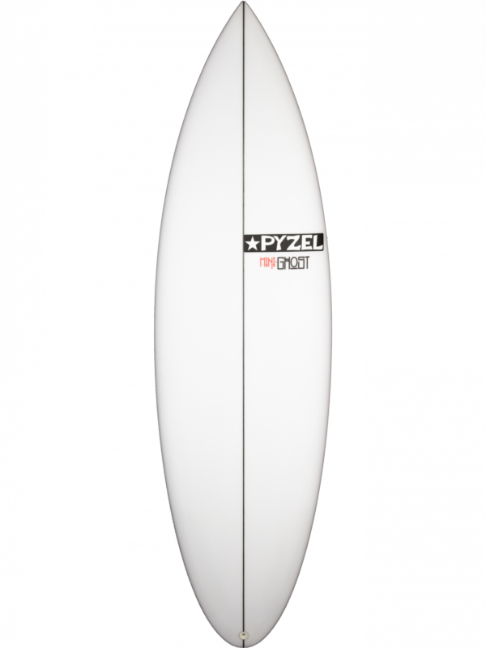

TABLAS DEL SUR

S/. 2170.00
El Mini Ghost surgió como resultado de la colaboración con Koa Smith para crear una versión corta, robusta y divertida, ideal para destrozar, de uno de sus favoritos, el Ghost.